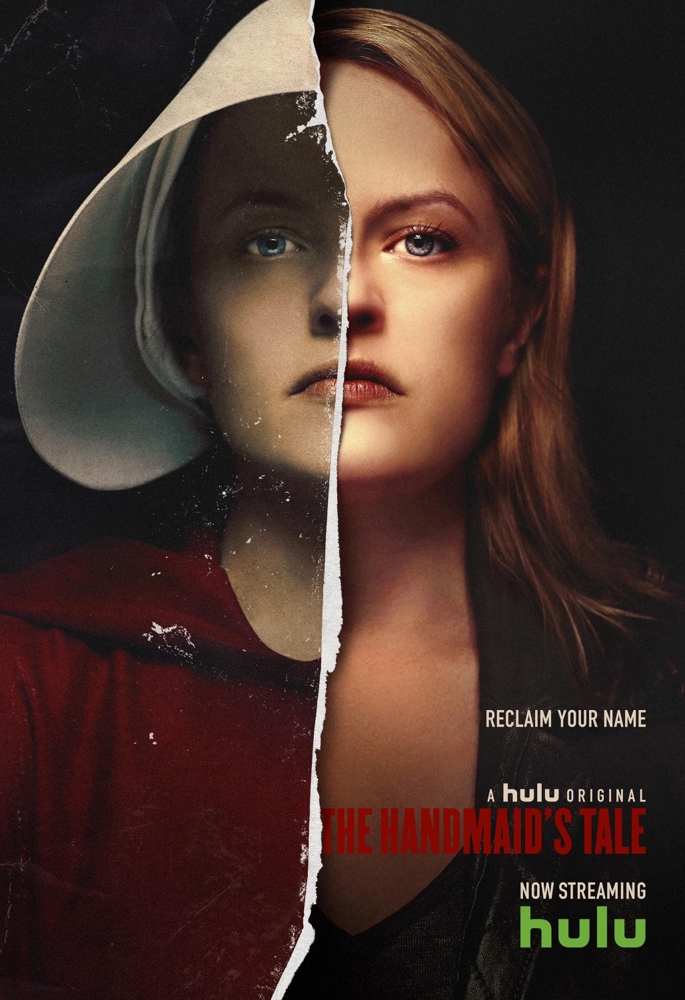

Kader Uzuner
Hakkımda
Merhaba, ben Kader Uzuner. Yönetim Bilişim Sistemleri 4. Sınıf Öğrenciyim. Yazılım geliştirmekten daha fazla keyif aldığımı farkettim ve çalışmalarımı bu alana yönelttim . Yaptığım çalışmaları çoğunlukla .NET Core teknolojileriyle sürdürsemde dilden ve framework'lerden bağımsız bir anlayış kazanmaya çalıştım, dolayısıyla, SOLID yazılım prensiplerine hakim, nesne tabanlı programlama mantığını iyi anlamış, sürdürülebilir yazılımlar geliştirebilen nitelikli bir yazılım geliştirici olmak hedeflerim arasındadır.
İlgi Alanlarım- Film
- tv-shows
- book
Sevdiğim Diziler
The Handmaid's Tale
The Handmaid's Tale The Handmaid's Tale, Margaret Atwood’un aynı isimli romanından uyarlanan dizi, Gilead isimli bir toplumda geçiyor. Dizinin konusu kadınların erkeklerin egemenliğinde kaldığı ve bunun kadın doğasına aykırı olduğu ve kadın haklarının da hiçe sayıldığı anlatılmaktadır. Kitabın ana fikri ise her kadın en az erkekler kadar hakka sahiptir toplum nazarında bütün haklar eşit olarak verilmelidir. Doğal sebepler nedeniyle nüfus düşüşü yaşayan bu toplumda kadınlar devletin malı olarak kabul ediliyor. Toplumun yeniden çoğalması için üreme hizmetine zorlanan Offred, bu acımasız koşullarda hayatta kalmaya çalışıyor.
Game Of Thrones

Game of Thrones Game of Thrones, David Benioff ve D. B. Weiss tarafından yaratılan ve HBO'da yayımlanan Amerikan fantastik televizyon dizisidir. George R. R. Martin'in epik fantezi serisi Buz ve Ateşin Şarkısı'ndan uyarlanmış olan dizi, adını serinin ilk kitabından almaktadır. İngiltere, Kanada, Hırvatistan, İzlanda, Malta, Fas ve İspanya'da çekilmiştir. [5] İlk bölümü 17 Nisan 2011'de HBO üzerinden yayımlanmış ve sekiz sezon süren yetmiş üç bölümün ardından 19 Mayıs 2019'da sona ermiştir. [6][7]Kurgusal kıtalar Westeros ve Essos'da geçen Game of Thrones, geniş bir ansambl oyuncu kadrosuna sahiptir ve yayımlandığı süre boyunca birden fazla olay örgüsünü içinde barındırmıştır.[8] Ana örgü, Westeros'un Yedi Krallığı'nın Demir Tahtı için hak iddia eden veya ondan bağımsız olmaya çalışan soylu aileler arasında geçen siyasi çatışmalar üzerinedir.[9] Dizinin odaklandığı ikinci ana örgü, tahttan indirilmiş ailenin son soyundan gelen Daenerys Targaryen'dir. Essos'a sürgüne gönderilmiş ve taht için geri dönüşünü planlamaktadır. Üçüncü ana örgü ise kuzeyden gelen tehditlere karşı diyarı savunan askerî bir düzen olan Gece Nöbetçileri'dir.